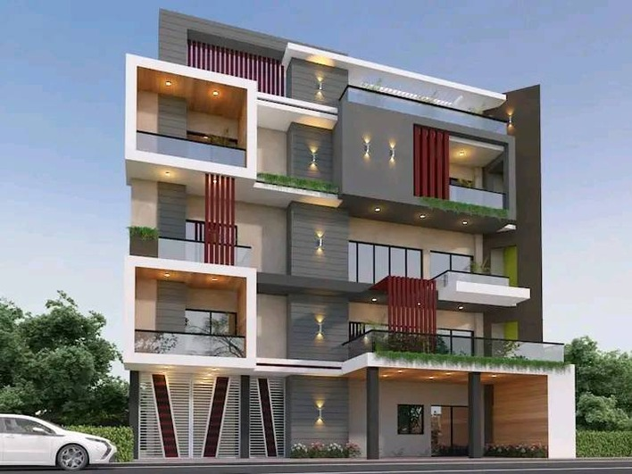

A small studio built on the idea that good design should feel inevitable — like it was always meant to be there.

Storica Architects started as a small, hands-on studio focused on residential and interior design across Bangladesh. Instead of chasing scale, we kept the team small so every project gets real attention from concept sketch to final walkthrough.
Over the years we've grown mostly through word of mouth — clients who wanted a studio that actually listens, keeps drawings buildable, and stays reachable long after the contract is signed.
Today, we work on everything from full house designs to interior renovations, always balancing timeless materials with a modern, livable layout.
We design with materials that age well and stay true to their character, not just what looks good on day one.
Every drawing is checked against real construction constraints, so what you approve is what actually gets built.
Small studio, direct communication — you talk to the people actually working on your project, every time.